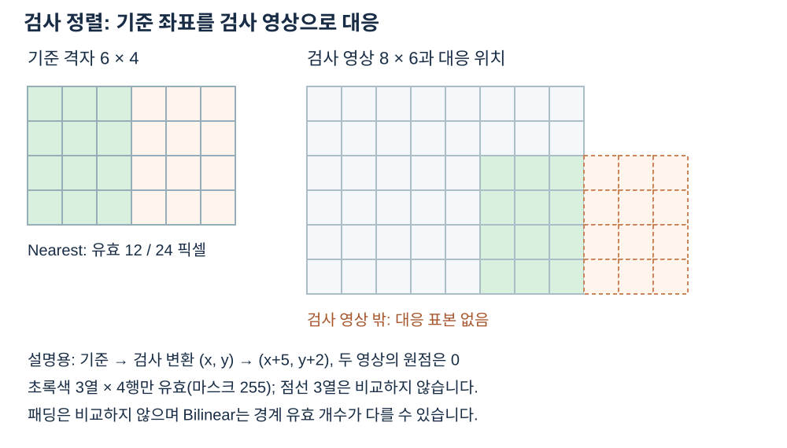

좌표와 수명
InspectionRect는 영상 로컬의 왼쪽 위와 너비·높이이며 끝 좌표는 제외합니다. 정렬 입력은 Gray8, Gray16, GrayF32이고 혼합 가능합니다. 기준 ROI는 양의 크기로 기준 영상 안에 있어야 하며 NCC 학습 영역에 밝기 변화가 필요합니다. 출력 Aligned는 기준 격자와 원점의 GrayF64, ValidMask는 같은 격자의 Gray8입니다. 변환 ReferenceToInspection은 기준 전역 좌표에서 검사 전역 좌표로 갑니다. 결과와 얻은 영상 각각을 해제하세요.


판독 기준
- 기준 6×4, 검사 8×6, 원점 0, 이동 (+5,+2), Nearest 보간인 설명용 예에서는 정수 좌표 12개가 유효합니다.
- Bilinear의 경계 유효 개수는 표본 위치에 따라 다를 수 있습니다. 최소 유효 비율도 별도로 확인합니다.
수치와 도형은 연결된 계약의 핵심 관계를 설명하는 예입니다. 실제 SDK 출력으로 명시한 자료를 제외하면 실행 결과나 장비 실측으로 해석하지 않습니다. 좌표계·입력 형식·수명과 오류 조건은 관련 API 계약을 확인한 뒤 적용하세요.
기준 영상 데이터의 관심 영역은 학습 무늬를 지정하는 로컬 사각형이고, 정렬 출력은 기준 영상 데이터 전체의 격자에서 계산됩니다. 사각형의 오른쪽과 아래 끝은 포함하지 않으므로 위치가 (1,1), 크기가 3×3이면 열과 행 1부터 3까지가 학습 대상입니다. 무늬가 상수이면 정규화 상관을 위한 분산이 없어 유효한 학습 영역이 되지 않습니다.
찾은 변환은 기준 전역 좌표에서 분석 전역 좌표로 가지만, 출력 영상 데이터의 인덱스는 기준의 로컬 좌표입니다. 입력이나 기준이 부모 영상 데이터의 ROI라면 각 원점을 더하는 위치를 한 번만 적용해야 합니다. 유효 마스크는 보간에 필요한 표본이 입력 안에 있는 위치를 255로 나타내며, 유효하지 않은 가장자리를 차분에 포함하지 않도록 전달합니다. 출력을 읽기 전에 발견 여부와 유효 픽셀 수를 함께 살펴봅니다.
예를 들어 기준 ROI가 (1,1,3,3)이면 너비와 높이는 끝 인덱스가 아니라 각각 세 픽셀을 뜻합니다. 출력 변환과 로컬 인덱스를 같은 좌표로 취급하면 이동량을 두 번 적용할 수 있습니다.
정렬 단계의 좌표 인계
검사 파이프라인에서 좌표를 넘기는 순서를 분명히 하면 위치 오차와 결함을 혼동하지 않습니다. 기준 ROI는 NCC 학습 무늬를 지정하는 기준 영상 로컬 사각형입니다. 검색은 검사 영상의 보이는 영역에서 이루어지고, 얻은 변환은 기준 전역에서 검사 전역으로의 대응을 나타냅니다. ROI의 로컬 시작값과 각 영상의 origin을 같은 숫자라고 가정하지 않습니다.
정렬은 입력 검사를 기준 격자 전체로 재표본화합니다. 그 결과인 Aligned는 GrayF64이고 ValidMask는 같은 격자의 Gray8입니다. 기준의 25픽셀 중 20픽셀만 보간 지원이 완전하다면 유효 비율은 20/25입니다. MinValidFraction을 0.9로 지정했다면 검색이 되었더라도 비교 영역 조건이 충족되지 않아 미발견으로 처리됩니다.
표면 후보의 Bounds와 Centroid는 차분을 수행한 영상의 로컬 위치입니다. 판정의 AllowedRegion도 같은 로컬 좌표로 작성해야 후보 경계를 올바르게 비교할 수 있습니다. 화면에서 원본 검사 영상에 후보를 표시하려면 먼저 기준 격자에서 검사 전역으로의 변환 방향을 확인합니다. 결과 영상과 그 부모 결과는 별도 소유 객체입니다.
| 좌표 | 출처 | 다음 단계 |
|---|---|---|
| 기준 ROI | 기준 로컬 | 학습 무늬 지정 |
| ReferenceToInspection | 전역→전역 | 원본 검사 위치 해석 |
| 차분 후보 | 기준 격자 로컬 | 영역 판정 |
| 허용 영역 | 후보와 같은 로컬 | 전체 경계 포함 확인 |